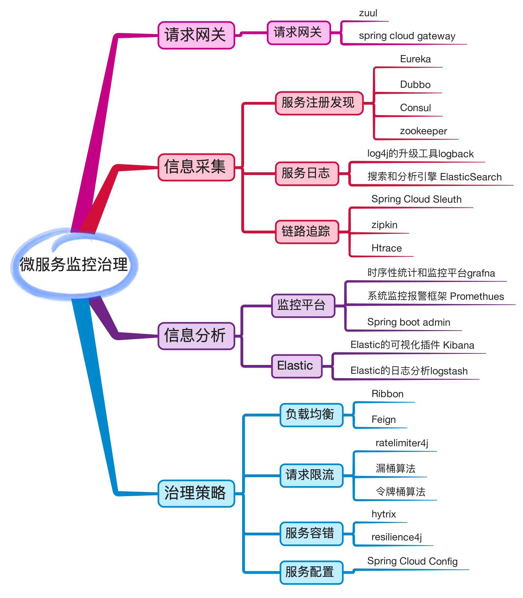

先说说什么是微服务
James Lewis 和 Martin Fowler关于微服务架构的定义,有以下几点：
- 整个应用系统由若干个独立运行的服务组成
- 服务之间有轻量级的通讯机制，通常是REST API
- 每个服务都有自己的业务逻辑，并且可以单独部署
- 去中心化的服务管理机制
- 每个服务可以用不同的编程语言实现，使用不同的数据存储技术
目前比较流行的微服务框架spring cloud包含了以下几类的组件
- 服务注册发现：Eurake，Dobbo，Consul，ZooKeeper
- 服务配置：Spring Cloud Config，Archaius
- 服务熔断：Hystrix，resilience4j
- 网关：Zuul，Spring Cloud Gateway
- 负载均衡：Ribbon，Feign
- 追踪工具：Sleuth，Zipkin，Htrace
- 日志采集：logback，ElasticSearch
- 监控平台：Promethues，Kibana，grafana，Spring boot admin

网关
数据库中间件maxscale , proxysql 等可以算是一种网关和负载均衡
负载均衡
数据库做负载均衡除了中间件的读写分离,还可以使用haproxy等4层负载均衡软件
服务配置
这里我要讲一讲我遇到过的各种各样的配置方法了
直接把数据库IP配置在配置文件中,比如
java项目配置在xml配置文件中
go项目配置在ini配置文件中
- 也有java项目把数据库IP配置在zookeeper中的
- 也有PHP项目把数据库的对应域名配置在一个统一的配置中心的
至于各种配置方法也是根据不同的数据库高可用方案来的,至于那种方案比较好,我们在另外一篇<MySQL高可用方案>中在讲
日志采集与追踪
数据库慢查询日志分析,也是使用的ELK那一套
监控平台
Promethues , open-falcon, ELK
服务降级
单机多实例的情况下,磁盘满了,首先迁移的是从库
服务熔断
经历过几次故障,业务大量的使用insert into on update dumplicate key 语句,并发上来了,主库卡死
通过pt-kill杀掉僵死的sql,但是并没有好转
如果这个时候切换主库,会不会把新主库搞死呢,所以没有切换主库
最后找出请求数据库比较多的IP,把这个IP的权限下掉,等数据库恢复后,在把权限加上
这也算是一种熔断措施了
服务限流
还是上面的那个事情,首先业务把insert into on update dumplicate key语句改掉了
另外业务开发能力比较强,自己实现了和tcp滑动窗口原理类似的组件来访问数据库
当发现数据库的延时增加的时候,就相应的减少对数据库的请求
这也算是一种服务限流了